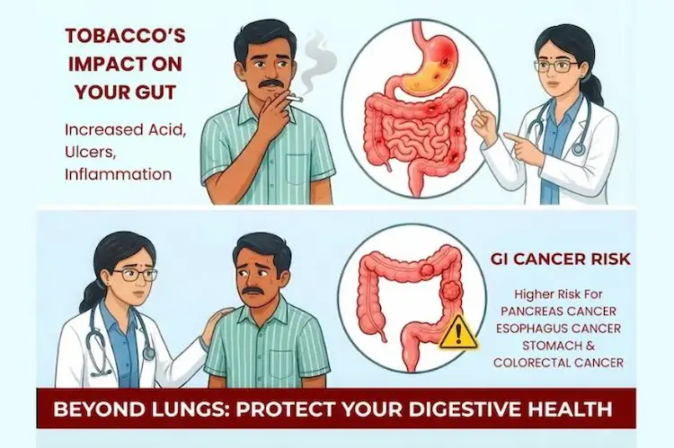
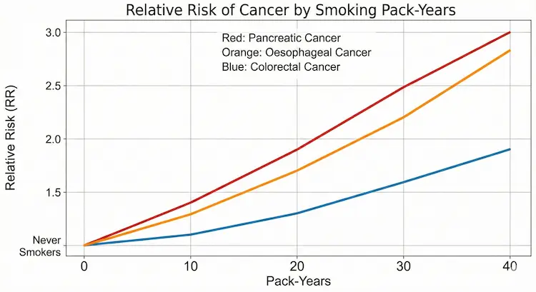
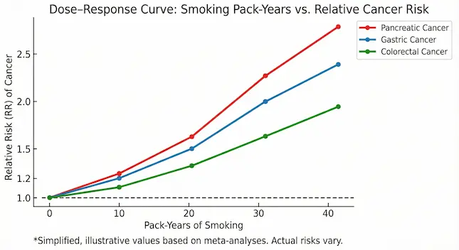
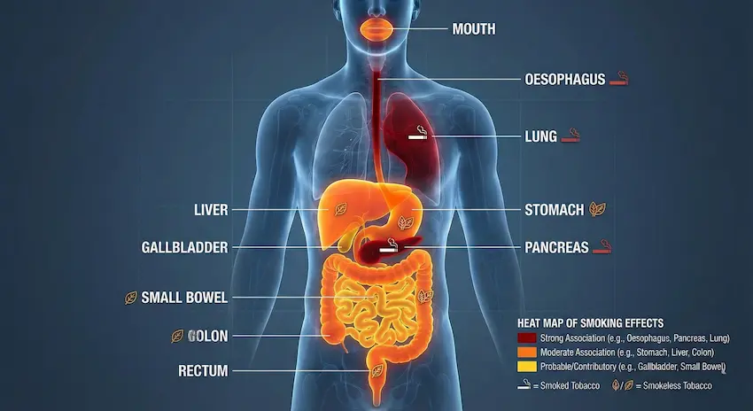

Most people in Ranchi, Bokaro and other parts of Jharkhand think of smoking as a “lung problem.” But in reality, tobacco is a full-length GI toxin .
But in reality, tobacco is a full-length GI toxin.
Every cigarette, bidi, hookah session, or pinch of khaini/gutkha mixes cancer-causing chemicals with your saliva. This toxic mix travels down your food pipe, reaches the stomach, liver, pancreas and intestines through blood and bile, and injures the lining of your digestive organs day after day.
Over the years, this has become a spectrum of disease, starting from “simple gas and acidity” and ending in serious GI cancers.
At PancreaCare By Advitya Healthcares, Ranchi, we regularly see this pattern among patients from Ranchi, Bokaro, Dhanbad, and nearby districts.
Dose, Mode and Frequency – Why Your Pattern of Use Matters
1. Dose – How much over how many years?
Doctors use the term “pack-years” to estimate your lifetime exposure:
Pack-years = (packs smoked per day) × (years smoked)
(1 pack = 20 cigarettes; for bidis, you can think in terms of “bidi-years”.)
The higher the dose, the higher your risk of serious GI disease:
- Pancreatic cancer: long-term heavy smokers (e.g. 20 cigarettes or many bidis a day for 20+ years) have about double the risk compared with people who never smoked.
- Colorectal cancer: decades of smoking increase the risk of polyps and cancers in the colon and rectum.
- Stomach cancer: risk increases with cumulative dose, especially in the lower part of the stomach.
For patients, we often explain it like this:
“Your stomach, liver and pancreas remember every cigarette or pinch of tobacco.
The more you use and the longer you use, the higher your cancer risk climbs.”
Mode – Smoked vs smokelessvs Combined(very relevant in Jharkhand)
In Jharkhand, the type of tobacco matters a lot because many people chew tobacco in addition to smoking.
Smoked forms : (Cigarettes, bidis, hookah)
- It directly irritates the mouth, throat and food pipe (oesophagus).
- Carry carcinogens through the blood to the stomach, liver, pancreas and colon.
Associated with:
- Oesophageal cancer
- Stomach, pancreatic, liver and colorectal cancers
- Peptic ulcers, reflux, Crohn’s disease and worsening of existing bowel problems
Smokeless forms : Khaini, gutkha, zarda, betel quid with tobacco (prevalent in Ranchi & Bokaro)
- Keep high levels of chemicals in prolonged contact with the mouth and upper GI lining.
- Strongly linked to:
- Oral and throat cancers
- Oesophageal cancer
They also likely increase the risk of stomach and pancreatic cancer over time.
Dual use – smoking + chewing
Many patients in our region both smoke and chew. This combines:
- Systemic exposure from smoke
- Local chemical burns from chewed tobacco
This “double hit” raises the risk of cancers in the mouth, food pipe and upper GI tract even more than one form alone.
Frequency and duration – “Only 2–3 a day” is not safe
Common lines we hear in OPD at PancreaCare:
- “Doctor, I smoke only 2–3 cigarettes a day.”
- “Sir, I only take khaini after meals.”
- “I smoke only on weekends.”
Reality:
- Daily use over many years is what builds chronic damage.
- Even “light smokers/chewers” have a clearly higher risk than non-users.
- Starting young (late teens / early twenties) means that by the time serious symptoms appear, you may already have 15–20 years of exposure.
There is no truly safe level of tobacco for your gut.
The Jharkhand GI Story: from “simple gas” to cancer – A Ladder of Harm
Think of tobacco-related damage as a ladder. Patients in Ranchi and Bokaro often present at different rungs of this ladder.
Step 1 – Common digestive complaints
These are the problems we see every day in the clinic:
- Reflux and heartburn (GERD):
Smoking weakens the valve between the food pipe and the stomach and increases acid reflux.
→ Burning in the chest, sour taste, nighttime reflux, “gas” complaints. - Dyspepsia and bloating:
Stomach lining irritation and slowed movement lead to upper abdominal discomfort, heaviness after meals and early fullness. - Peptic ulcers:
Tobacco reduces blood flow and the healing capacity of the stomach and duodenal lining.
Smokers and chewers have more ulcers, and these ulcers are slower to heal and more prone to bleed or perforate. - IBD and IBS:
Smoking is an independent risk factor for Crohn’s disease and often makes it worse.
Step 2 – Chronic organ damage
With continued use, injury becomes more permanent.
- Chronic pancreatitis:
Now recognised as a major independent risk factor, not just an add-on to alcohol.
Smokers are more likely to develop chronic pancreatitis and progress faster to diabetes and pancreatic insufficiency.
- Fatty liver and fibrosis:
Smoking increases inflammation and oxidative stress in the liver, worsening fatty liver (NAFLD/NASH), especially in people who are overweight, diabetic or already have liver disease.
- Cirrhosis and complications:
In patients with hepatitis B/C, alcohol-related liver disease or NASH, tobacco accelerates scarring and increases the risk of liver cancer (HCC).
Step 3 – GI cancers (the tip of the iceberg)
The most serious consequence is cancer of the digestive organs.
Oesophageal cancer
- Smoking is a major risk factor for oesophageal squamous cell carcinoma; risk rises with number of cigarettes and years smoked.
- Combined tobacco + alcohol multiplies risk.
- Smokeless tobacco and betel quid (esp. in South Asia) further increase risk of upper aerodigestive tract cancers, including oesophagus.
Stomach (gastric) cancer
- Meta-analyses show smokers have ~1.5–2× higher risk of gastric cancer compared to never-smokers, with a clear dose–response.
- Non-cardia gastric cancers are particularly associated with smoking, especially on a background of H. pylori and chronic gastritis.
Pancreatic cancer
- Smoking is one of the strongest modifiable risk factors for pancreatic cancer.
- Smokers have approximately 2× risk, heavy and long-term users have even higher.
- Mechanisms:
- Carcinogens reach the pancreas via the bloodstream and the bile.
- Promote KRAS mutations, chronic inflammation, and pancreatitis, creating a “fertile soil” for cancer.
Important positive point:
Risk gradually declines after cessation and may approach baseline levels ~10–20 years after quitting.
Liver cancer (Hepatocellular carcinoma – HCC)
- Smoking is associated with increased risk of HCC, especially in patients with chronic hepatitis B/C, alcohol-related liver disease or NASH.
- It likely worsens fibrosis, oxidative stress and immune surveillance.
In many cohorts, smokers with viral hepatitis have significantly higher HCC risk than non-smokers with the same viral load.
Colorectal cancer
- Long-term smokers have a higher risk of:
- colorectal adenomas (pre-cancerous polyps)
- invasive colorectal cancer, especially rectal and proximal colon cancers.
- Smoking seems to promote more advanced adenomas and microsatellite instability-high CRC in some studies.
Screening implication:
In some guidelines, heavy smokers are considered at moderately increased CRC risk → support for earlier or more vigilant colonoscopy.
Dose & intensity visuals –Figures/diagrams
Figure 1 – “Ladder of harm” diagram
Concept: from “mild” to “severe” impact.
- X-axis: stages (Reflux → Ulcer → Chronic pancreatitis/fatty liver → Cirrhosis → Cancers).
- Y-axis: cumulative exposure (light → moderate → heavy smoker; years).

Figure 2 – Dose–response curve (risk vs pack-years)
A simple line graph:
- X-axis: pack-years (0, 10, 20, 30, 40).
- Y-axis: relative risk of pancreatic / gastric / colorectal cancer.
For example (simplified, illustrative values):
- RR 1.0 (never)
- 1.2 at 10 pack-years
- 1.5 at 20
- 2.0 at 30+

Figure 3 – “Heat map” of organs affected
A stylised human torso / digestive system diagram:

- Highlight the mouth, oesophagus, stomach, liver, pancreas, colon, and rectum.
- Use colour coding:
- Dark red: strong association with smoking (oesophagus, pancreas, lung).
- Orange: moderate association (stomach, liver, colon).
- Yellow: probable or contributory effects (gallbladder, small bowel).
- small icons:
- 🚬 = smoked tobacco,
- 🪔 / leaf = smokeless.
After You Quit – Can the Gut Heal?
The hopeful part of this story is thatstopping tobacco helps, even after years of use.
- Reflux, heartburn and dyspepsia can improve within weeks to months.
- Ulcer risk reduces sharply when you quit and treat H. pylori if present.
- The risk of pancreatic, gastric and colorectal cancers gradually falls after quitting; over 10–20 years, it can come closer to that of a non-smoker, depending on earlier dose and duration.
- In liver disease, quitting tobacco (along with alcohol control, weight management and proper medical treatment) slows down fibrosis and reduces the chance of liver cancer.
The message we give our patients from Ranchi, Bokaro and across Jharkhand is simple:
“The best day to quit was yesterday.The second-best day is today – before the damage becomes permanent.”
When Should You See a GI Specialist in Ranchi?
If you use tobacco (smoked or chewed) and have any of these warning signs, you should not ignore them:
- Persistent upper abdominal pain, burning or discomfort
- Difficulty swallowing, or food getting stuck
- Unintentional weight loss and poor appetite
- Black stool, blood in stool, or repeated vomiting
- New-onset jaundice or long-standing fatty liver with a history of tobacco use
- Change in bowel habits (new constipation or loose stools) for more than 4–6 weeks
At PancreaCare By Advitya Healthcares, Ranchi, we evaluate such patients with appropriate tests – endoscopy, colonoscopy, ultrasound, CT/MRI and blood tests – and create a clear, personalised plan for diagnosis, treatment and follow-up.
Have a question this article does not answer?
Send us your reports. A specialist reviews them before you travel, so the first visit begins with a plan rather than a repeat test.